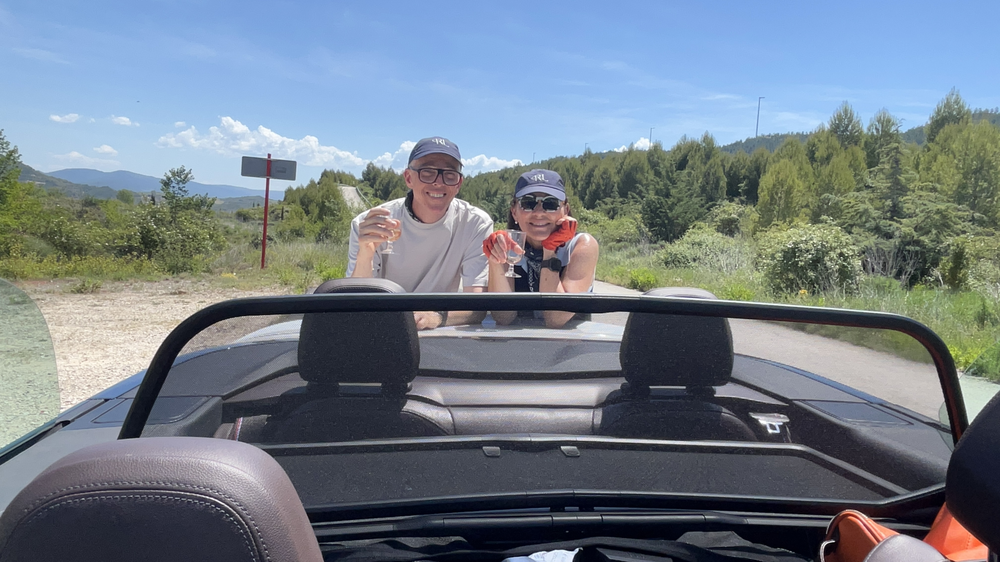
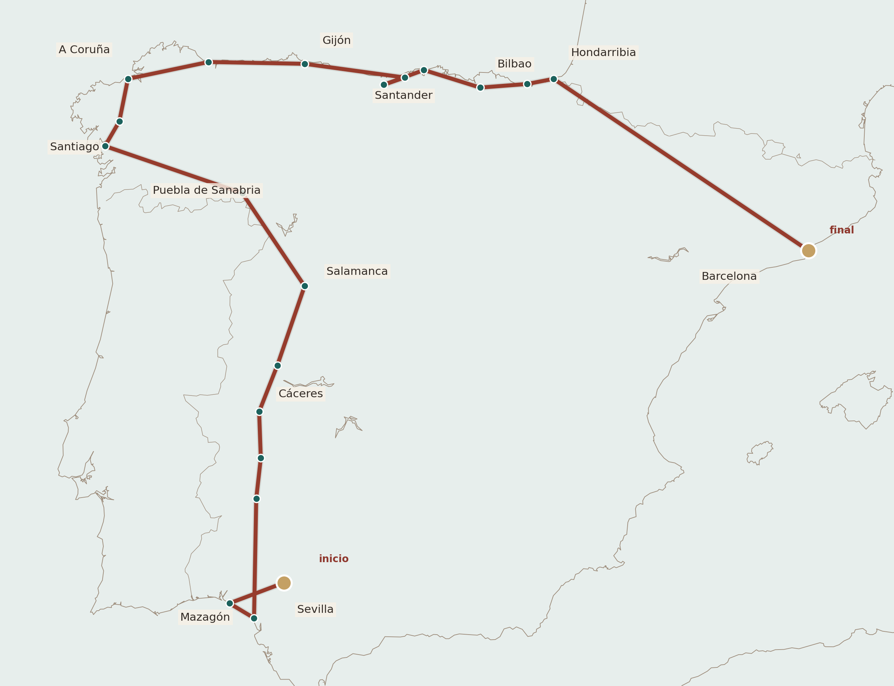
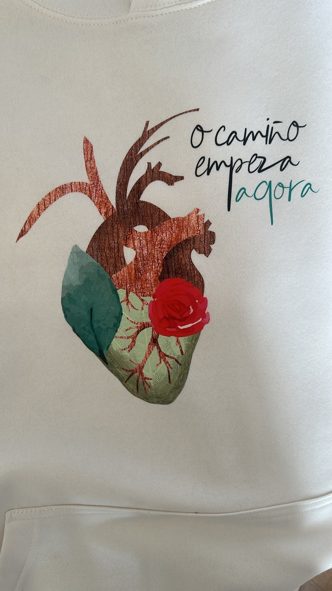

Parador de Mazagón
El viaje empezó junto a Doñana, con pinos, playa y aire atlántico. La terraza funcionó mejor que la cena: gambas blancas, ensaladilla de pulpo, pavías de bacalao y esa primera sensación de que las vacaciones ya habían empezado.

Rosaura y Leo. Del sur al norte en coche, desde Mazagón hasta Hondarribia, con regreso a Barcelona. Mayo de 2026.

El viaje empezó casi sin darnos cuenta: el coche abierto, el aire entrando, las gorras, los pañuelos y esa mezcla de ilusión y desorden que anuncia que algo bueno está empezando.
Todavía no habíamos llegado a ningún sitio importante y ya estaba claro que la ruta no iba a obedecer del todo. Habría hoteles y reservas, sí, pero también paradas improvisadas, recomendaciones al vuelo, fotos absurdas, brindis y alguna decisión tomada simplemente porque apetecía.
Hay fotos que no necesitan explicarse demasiado: una camiseta con una frase que termina dando título a todo, una bandera, un escaparate con Superman, unos chochos salmantinos, una estatua, un Parador, unas botas llenas de flores.
No son decoración. Son las pequeñas pruebas de que nuestro viaje no fue solo una ruta: fue una sucesión de escenas propias, reconocibles, imposibles de confundir con las de nadie más.

Los hoteles no fueron solo el final práctico de cada etapa. Algunos pusieron playa y pinar, otros piedra antigua, otros vistas al mar o una plaza histórica al otro lado de la puerta. Cada noche ayudó a cambiar el tono del viaje.
El viaje empezó junto a Doñana, con pinos, playa y aire atlántico. La terraza funcionó mejor que la cena: gambas blancas, ensaladilla de pulpo, pavías de bacalao y esa primera sensación de que las vacaciones ya habían empezado.
Después de Doñana, Zafra, Mérida y la llegada a Cáceres, el Parador puso silencio y piedra antigua al final del día. Era el tipo de hotel que ayuda a bajar la voz después de una jornada bastante llena.
Puebla de Sanabria llegó después de Salamanca y de mucha carretera. El Parador fue descanso puro antes de Galicia; luego apareció la recomendación de los moteros, el Mesón Abelardo y un pulpo que terminó robándose la noche.
La escala gallega tuvo un ritmo más tranquilo: Terramar, Vilagarcía, Franco Quintáns y amigos. Esa noche el recuerdo no está tanto en el hotel como en la cena de Diurno y en la sensación de haber entrado ya en otra parte del viaje.
En Santiago, dormir junto al Obradoiro tenía algo inevitablemente especial. La cena de menú degustación fue más regular que memorable, pero la noche en el Parador dejó la sensación de estar dentro del propio escenario del Camino.
En A Coruña el hotel miraba hacia el agua y acompañó muy bien la etapa: paseo, Torre de Hércules y una comida en El de Alberto que quedó como una de las mejores del viaje, casi un capítulo aparte.
Gijón llegó después de la Playa de las Catedrales y de mucho Cantábrico. El Parador dio una entrada tranquila a la ciudad, y por la noche Zascandil dejó una cena correcta, con alguna cosa mejor que otra.
Después de Altamira y El Soplao, llegar al Sardinero fue casi cambiar de película: costa, paseo y un hotel que gustó mucho. La cena en La Mulata queda pendiente de completar, pero la noche santanderina sí encontró su tono.
El Carlton puso a Bilbao en modo ciudad grande. Ese día tuvo Guggenheim, paseo, cena en Eneko y conexiones argentinas inesperadas. Fue una de esas etapas en las que todo parecía tener un poco más de brillo.
Hondarribia fue el lugar adecuado para no moverse más. Cancelar Gandarias y quedarse allí terminó siendo la mejor decisión: paseo al atardecer, puerto, piedra, Parador y cena final en la Hermandad de Pescadores.
La primera tarde tuvo sabor de llegada: gambas blancas, ensaladilla de pulpo, pavías de bacalao, vino, agua y café. La terraza funcionó muy bien, con esa mezcla de cansancio e ilusión de quien por fin se sienta después de empezar.
La cena en el Parador no convenció demasiado. No quedaron platos concretos documentados, y quizá por eso el recuerdo gastronómico de Mazagón se quedó más en la terraza de la tarde que en la mesa de la noche.
En Zafra, La Bendita fue una parada breve y feliz. La tabla de quesos regionales gustó mucho y dejó la sensación de que la ruta empezaba a tener sus propios hallazgos: pequeños, sabrosos y sin demasiada planificación.
La escala cultural se convirtió en aperitivo informal: verdejo, jamón ibérico y un cantaor que terminó haciéndole una serenata a Rosaura. No hubo visita monumental, pero la escena quedó bastante más viva que cualquier plan previsto.
En Cáceres, Torre de Sande fue una cena correcta en un espacio que gustó mucho. Más que los platos, quedó el ambiente: la luz baja, el casco antiguo y el encuentro con Toño Pérez como pequeño regalo inesperado de la noche.
Plasencia fue una parada corta, de esas que no pretenden convertirse en capítulo. Una cerveza en la Plaza Mayor bastó para estirar las piernas, mirar alrededor y seguir camino hacia Salamanca sin cargar demasiado la escena.
Salamanca tuvo piedra dorada, paseo y mesa. En Las Tapas de Gonzalo quedaron especialmente en la memoria las patatas bravas y el brioche de steak tartar. Después aparecerían los chochos, documentados con foto aunque sin cata.
La recomendación de los moteros funcionó. En Mesón Abelardo hubo ensalada de ventresca con pimientos y bonito, pulpo, pan, vino, agua, mousse de chocolate y cafés. Lo que quedó por encima de todo fue el pulpo.
En Vilagarcía de Arousa, Diurno aportó una parada más urbana y relajada, cerca de la zona de vinos y tapeo del centro. La cena con Franco Quintáns y amigos tuvo pataquiñas Diurno, ensalada de pollo, nachos Killbill, focaccia de roastbeef, tiramisú y tarta de queso al horno.
Al día siguiente, Rosaura comió en Terramar. Leo no comió por asuntos propios, así que la escena queda apuntada de forma desigual: una comida real para una parte del viaje y un hueco en blanco para la otra.
La cena en el Parador de Santiago fue menú degustación, pero la valoración quedó regular. El lugar tenía todo el peso simbólico del Obradoiro; la mesa, en cambio, no terminó de acompañar con la misma fuerza.
El de Alberto fue una de las grandes mesas del viaje: 10/10. Hubo menú degustación, con atún rojo marinado, salmón con tártara de anguila, dumplings a la carbonara, merluza a la gallega, ciervo, espárragos y un donete de chocolate blanco con crema de galleta.
La noche coruñesa siguió en Café La Dársena, sin grandes ceremonias: agua, copas de Godello, patatas Bonilla, cafés y crema de whisky. Una de esas paradas que no necesitan mucho para quedar bien colocadas en el recuerdo.
En Zascandil hubo alcachofas con langostinos al oloroso, puerros con vinagreta de manzana y avellanas, calamares en su tinta con arroz, sidra Alicia, postres y café. La cena fue correcta; los calamares no gustaron.
La Mulata queda todavía como una cena pendiente de completar. Sabemos que fue la noche de Santander, después del Gran Hotel Sardinero y antes del paseo de regreso, pero falta ticket o recuerdo confirmado para fijar los platos.
En Bilbao, el Menú Degustación Bizkaia estuvo muy bien: mini talo de maíz, vieira marinada, praliné de setas, yema sobre estofado de trigo, merluza en tempura con salsa verde, vacuno a la brasa y goxua con helado de caramelo.
La cena final llegó después de cancelar Gandarias y quedarse en Hondarribia. En la Hermandad de Pescadores hubo txangurro a la donostiarra, sopa de pescado, huevos estrellados Hermandad y lomo de rape a la parrilla. Un cierre muy bien elegido.
El último día no tuvo comida formal documentada. Fue más bien carretera, cafés, descansos, estirar las piernas y seguir. Después de tantas mesas, también tenía sentido que el regreso fuera sencillo.
Aquí bajamos el ritmo: podemos recorrer otra vez las etapas, sin prisa, con sus pequeñas escenas, sus desvíos y esa memoria compartida que aparece cuando contamos una historia con cariño.
El viaje terminó en Barcelona, después de unos 2.500 kilómetros.
Quedaron hoteles, carreteras, comidas, cuevas, museos, conversaciones y unas cuantas decisiones tomadas bastante sobre la marcha.
Visto ahora, quizá esa fue la mejor parte: no haber intentado controlarlo todo.
No todo fue perfecto. Mejor así. Los viajes perfectos suelen ser bastante aburridos cuando los contamos después.